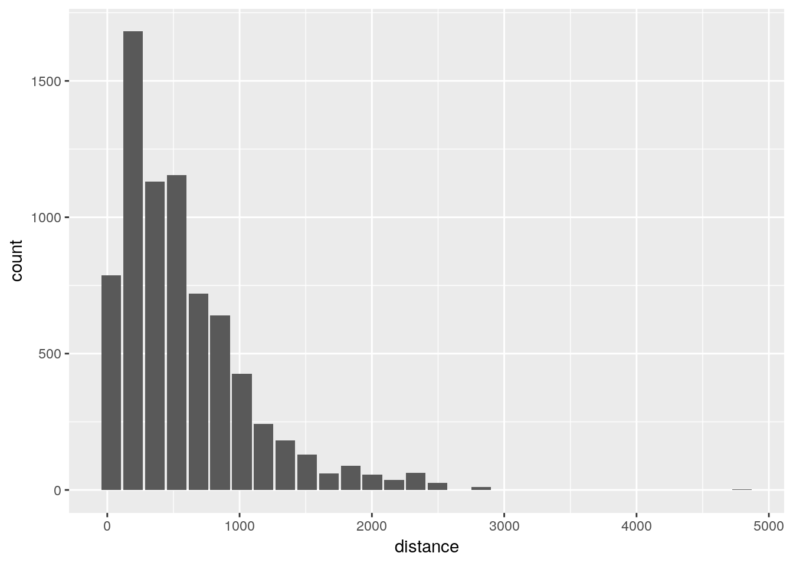

5 Modeling
5.1 SQL Native sampling
Use PostgreSQL TABLESAMPLE clause
- Find out the class of the object returned by
show_query(). Test with table_flights.
table_flights %>%
show_query() %>%
class()## <SQL>
## SELECT *
## FROM datawarehouse.flight## [1] "tbl_PostgreSQL" "tbl_dbi" "tbl_sql" "tbl_lazy"
## [5] "tbl"- Find out the class of the object returned by
remote_query(). Test with table_flights.
table_flights %>%
remote_query() %>%
class()## [1] "sql" "character"- Run
remote_query()again table_flights
remote_query(table_flights)## <SQL> SELECT *
## FROM datawarehouse.flight- Use
build_sql()to paste together the results of theremote_query()operation and " TABLESAMPLE SYSTEM (0.1)"
build_sql(remote_query(table_flights), " TABLESAMPLE SYSTEM (0.1)")## <SQL> SELECT *
## FROM datawarehouse.flight TABLESAMPLE SYSTEM (0.1)- Use
build_sql()andremote_query()to combine a thedplyrcommand with a custom SQL statement
sql_sample <- dbGetQuery(con, build_sql(remote_query(table_flights), " TABLESAMPLE SYSTEM (0.1)"))- Preview the sample data
sql_sample## flightid year month dayofmonth dayofweek deptime crsdeptime arrtime
## 1 6219 2008 1 5 6 1541 1520 1625
## 2 6220 2008 1 5 6 1313 1150 1524
## 3 6221 2008 1 5 6 1648 1650 1902
## 4 6222 2008 1 5 6 705 705 917
## 5 6223 2008 1 5 6 1750 1735 2107
## 6 6224 2008 1 5 6 626 625 925
## 7 6225 2008 1 5 6 1404 1355 1721
## 8 6226 2008 1 5 6 1123 1115 1426
## 9 6227 2008 1 5 6 1857 1840 1949
## 10 6228 2008 1 5 6 1216 1200 1306
## 11 6229 2008 1 5 6 700 700 757
## 12 6230 2008 1 5 6 1100 1100 1207
## 13 6231 2008 1 5 6 1536 1530 1640
## 14 6232 2008 1 5 6 1856 1855 1958
## 15 6233 2008 1 5 6 1746 1750 1850
## 16 6234 2008 1 5 6 47 2040 151
## 17 6235 2008 1 5 6 941 930 1050
## 18 6236 2008 1 5 6 1636 1640 1740
## 19 6237 2008 1 5 6 759 745 908
## 20 6238 2008 1 5 6 1331 1325 1432
## 21 6239 2008 1 5 6 1419 1405 1525
## 22 6240 2008 1 5 6 652 650 748
## 23 6241 2008 1 5 6 1510 1510 1608
## 24 6242 2008 1 5 6 910 915 1009
## 25 6243 2008 1 5 6 2059 2025 2159
## 26 6244 2008 1 5 6 1131 1125 1229
## 27 6245 2008 1 5 6 1743 1700 1844
## 28 6246 2008 1 5 6 905 905 1146
## 29 6247 2008 1 5 6 1517 1510 1747
## 30 6248 2008 1 5 6 859 845 1206
## 31 6249 2008 1 5 6 1553 1535 1828
## 32 6250 2008 1 5 6 1029 1025 1307
## crsarrtime uniquecarrier flightnum tailnum actualelapsedtime
## 1 1610 WN 2019 N676SW 44
## 2 1425 WN 733 N794SW 131
## 3 1925 WN 2103 N270WN 134
## 4 940 WN 3224 N404WN 132
## 5 2055 WN 489 N470WN 317
## 6 940 WN 1866 N245WN 299
## 7 1710 WN 2359 N257WN 317
## 8 1425 WN 2442 N775SW 303
## 9 1940 WN 310 N619SW 52
## 10 1300 WN 1013 N357SW 50
## 11 800 WN 3833 N787SA 57
## 12 1205 WN 99 N253WN 67
## 13 1640 WN 257 N420WN 64
## 14 2005 WN 394 N756SA 62
## 15 1900 WN 406 N346SW 64
## 16 2145 WN 505 N435WN 64
## 17 1040 WN 896 N793SA 69
## 18 1750 WN 1947 N745SW 64
## 19 855 WN 2355 N775SW 69
## 20 1430 WN 2621 N637SW 61
## 21 1515 WN 3047 N266WN 66
## 22 755 WN 122 N242WN 56
## 23 1615 WN 182 N684WN 58
## 24 1020 WN 606 N672SW 59
## 25 2130 WN 683 N551WN 60
## 26 1230 WN 1414 N364SW 58
## 27 1805 WN 3046 N723SW 61
## 28 1155 WN 143 N480WN 161
## 29 1800 WN 1743 N390SW 150
## 30 1135 WN 3679 N451WN 367
## 31 1835 WN 572 N461WN 215
## 32 1330 WN 710 N354SW 218
## crselapsedtime airtime arrdelay depdelay origin dest distance taxiin
## 1 50 33 15 21 BWI ORF 159 3
## 2 155 117 59 83 BWI PBI 883 5
## 3 155 120 -23 -2 BWI PBI 883 4
## 4 155 116 -23 0 BWI PBI 883 4
## 5 320 295 12 15 BWI PHX 1999 13
## 6 315 289 -15 1 BWI PHX 1999 3
## 7 315 286 11 9 BWI PHX 1999 16
## 8 310 288 1 8 BWI PHX 1999 6
## 9 60 39 9 17 BWI PIT 210 6
## 10 60 37 6 16 BWI PIT 210 6
## 11 60 38 -3 0 BWI PIT 210 7
## 12 65 53 2 0 BWI PVD 328 5
## 13 70 50 0 6 BWI PVD 328 6
## 14 70 50 -7 1 BWI PVD 328 5
## 15 70 49 -10 -4 BWI PVD 328 5
## 16 65 51 246 247 BWI PVD 328 5
## 17 70 52 10 11 BWI PVD 328 4
## 18 70 50 -10 -4 BWI PVD 328 5
## 19 70 53 13 14 BWI PVD 328 6
## 20 65 50 2 6 BWI PVD 328 4
## 21 70 51 10 14 BWI PVD 328 5
## 22 65 44 -7 2 BWI RDU 255 4
## 23 65 44 -7 0 BWI RDU 255 4
## 24 65 47 -11 -5 BWI RDU 255 4
## 25 65 46 29 34 BWI RDU 255 5
## 26 65 46 -1 6 BWI RDU 255 4
## 27 65 46 39 43 BWI RDU 255 5
## 28 170 132 -9 0 BWI RSW 919 3
## 29 170 136 -13 7 BWI RSW 919 4
## 30 350 351 31 14 BWI SAN 2295 4
## 31 240 203 -7 18 BWI SAT 1407 3
## 32 245 209 -23 4 BWI SAT 1407 2
## taxiout cancelled cancellationcode diverted carrierdelay weatherdelay
## 1 8 0 <NA> 0 15 0
## 2 9 0 <NA> 0 11 0
## 3 10 0 <NA> 0 NA NA
## 4 12 0 <NA> 0 NA NA
## 5 9 0 <NA> 0 NA NA
## 6 7 0 <NA> 0 NA NA
## 7 15 0 <NA> 0 NA NA
## 8 9 0 <NA> 0 NA NA
## 9 7 0 <NA> 0 NA NA
## 10 7 0 <NA> 0 NA NA
## 11 12 0 <NA> 0 NA NA
## 12 9 0 <NA> 0 NA NA
## 13 8 0 <NA> 0 NA NA
## 14 7 0 <NA> 0 NA NA
## 15 10 0 <NA> 0 NA NA
## 16 8 0 <NA> 0 3 0
## 17 13 0 <NA> 0 NA NA
## 18 9 0 <NA> 0 NA NA
## 19 10 0 <NA> 0 NA NA
## 20 7 0 <NA> 0 NA NA
## 21 10 0 <NA> 0 NA NA
## 22 8 0 <NA> 0 NA NA
## 23 10 0 <NA> 0 NA NA
## 24 8 0 <NA> 0 NA NA
## 25 9 0 <NA> 0 12 0
## 26 8 0 <NA> 0 NA NA
## 27 10 0 <NA> 0 17 0
## 28 26 0 <NA> 0 NA NA
## 29 10 0 <NA> 0 NA NA
## 30 12 0 <NA> 0 14 0
## 31 9 0 <NA> 0 NA NA
## 32 7 0 <NA> 0 NA NA
## nasdelay securitydelay lateaircraftdelay score
## 1 0 0 0 NA
## 2 0 0 48 NA
## 3 NA NA NA NA
## 4 NA NA NA NA
## 5 NA NA NA NA
## 6 NA NA NA NA
## 7 NA NA NA NA
## 8 NA NA NA NA
## 9 NA NA NA NA
## 10 NA NA NA NA
## 11 NA NA NA NA
## 12 NA NA NA NA
## 13 NA NA NA NA
## 14 NA NA NA NA
## 15 NA NA NA NA
## 16 0 0 243 NA
## 17 NA NA NA NA
## 18 NA NA NA NA
## 19 NA NA NA NA
## 20 NA NA NA NA
## 21 NA NA NA NA
## 22 NA NA NA NA
## 23 NA NA NA NA
## 24 NA NA NA NA
## 25 0 0 17 NA
## 26 NA NA NA NA
## 27 0 0 22 NA
## 28 NA NA NA NA
## 29 NA NA NA NA
## 30 17 0 0 NA
## 31 NA NA NA NA
## 32 NA NA NA NA
## [ reached getOption("max.print") -- omitted 7401 rows ]- Test the efficacy of the sampling using
dbplot_histogram()and comparing to the histogram produced in the Visualization chapter.
dbplot_histogram(sql_sample, distance)
5.2 Sample with ID
Use a record’s unique ID to produce a sample
- Summarize with
max()andmin()to get the upper and lower bound of flightid
limit <- table_flights %>%
summarise(
max = max(flightid, na.rm = TRUE),
min = min(flightid, na.rm = TRUE)
) %>%
collect()- Use
sample()to get 0.1% of IDs
sampling <- sample(
limit$min:limit$max,
round((limit$max -limit$min) * 0.001)
)- Use
%in%to match the sample IDs in table_flights table
id_sample <- table_flights %>%
filter(flightid %in% sampling) %>%
collect()- Test the efficacy of the sampling using
dbplot_histogram()and comparing to the histogram produced in the Visualization chapter.
dbplot_histogram(id_sample, distance)
5.3 Sample manually
Use row_number(), sample() and map_df() to create a sample data set
- Create a filtered data set with January’s data
db_month <- table_flights %>%
filter(month == 1)- Get the row count, collect and save the results to a variable
rows <- db_month %>%
tally() %>%
pull() %>%
as.integer()
rows## [1] 605765- Use
row_number()to create a new column to number each row
db_month <- db_month %>%
mutate(row = row_number()) - Create a random set of 600 numbers, limited by the number of rows
sampling <- sample(1:rows, 600)- Use
%in%to filter the matched sample row IDs with the random set
db_month <- db_month %>%
filter(row %in% sampling)- Verify number of rows
tally(db_month)## # Source: lazy query [?? x 1]
## # Database: postgres [rstudio_dev@localhost:/postgres]
## n
## <S3: integer64>
## 1 600- Create a function with the previous steps, but replacing the month number with an argument. Collect the data at the end
sample_segment <- function(x, size = 600) {
db_month <- table_flights %>%
filter(month == x)
rows <- db_month %>%
tally() %>%
pull() %>%
as.integer()
db_month <- db_month %>%
mutate(row = row_number())
sampling <- sample(1:rows, size)
db_month %>%
filter(row %in% sampling) %>%
collect()
}- Test the function
head(sample_segment(3), 100)## # A tibble: 100 x 32
## flightid year month dayofmonth dayofweek deptime crsdeptime arrtime
## <int> <dbl> <dbl> <dbl> <dbl> <dbl> <dbl> <dbl>
## 1 1177383 2008 3 3 1 720 720 912
## 2 1178149 2008 3 4 2 651 650 807
## 3 1178829 2008 3 4 2 856 900 952
## 4 1179167 2008 3 4 2 759 800 807
## 5 1179369 2008 3 4 2 709 710 910
## 6 1183494 2008 3 5 3 2054 2100 11
## 7 1184306 2008 3 5 3 731 735 932
## 8 1185885 2008 3 6 4 1000 1000 1050
## 9 1188572 2008 3 7 5 1641 1620 1757
## 10 1191340 2008 3 7 5 833 830 956
## # … with 90 more rows, and 24 more variables: crsarrtime <dbl>,
## # uniquecarrier <chr>, flightnum <dbl>, tailnum <chr>,
## # actualelapsedtime <dbl>, crselapsedtime <dbl>, airtime <dbl>,
## # arrdelay <dbl>, depdelay <dbl>, origin <chr>, dest <chr>,
## # distance <dbl>, taxiin <dbl>, taxiout <dbl>, cancelled <dbl>,
## # cancellationcode <chr>, diverted <dbl>, carrierdelay <dbl>,
## # weatherdelay <dbl>, nasdelay <dbl>, securitydelay <dbl>,
## # lateaircraftdelay <dbl>, score <int>, row <S3: integer64>- Use
map_df()to run the function for each month
strat_sample <- 1:12 %>%
map_df(~sample_segment(.x))- Verify sample with a
dbplot_histogram()
dbplot_histogram(strat_sample, distance)
5.4 Create a model & test
- Prepare a model data set. Using
case_when()create a field called season and assign based
model_data <- strat_sample %>%
mutate(
season = case_when(
month >= 3 & month <= 5 ~ "Spring",
month >= 6 & month <= 8 ~ "Summer",
month >= 9 & month <= 11 ~ "Fall",
month == 12 | month <= 2 ~ "Winter"
)
) %>%
select(arrdelay, season, depdelay) - Create a simple
lm()model against arrdelay
model_lm <- lm(arrdelay ~ . , data = model_data)
summary(model_lm)##
## Call:
## lm(formula = arrdelay ~ ., data = model_data)
##
## Residuals:
## Min 1Q Median 3Q Max
## -73.161 -7.603 -1.642 5.892 195.394
##
## Coefficients:
## Estimate Std. Error t value Pr(>|t|)
## (Intercept) -3.215076 0.324456 -9.909 < 2e-16 ***
## seasonSpring 1.820816 0.459621 3.962 7.52e-05 ***
## seasonSummer 1.272814 0.459332 2.771 0.0056 **
## seasonWinter 2.243866 0.462941 4.847 1.28e-06 ***
## depdelay 1.002297 0.004775 209.904 < 2e-16 ***
## ---
## Signif. codes: 0 '***' 0.001 '**' 0.01 '*' 0.05 '.' 0.1 ' ' 1
##
## Residual standard error: 13.65 on 7038 degrees of freedom
## (157 observations deleted due to missingness)
## Multiple R-squared: 0.8642, Adjusted R-squared: 0.8641
## F-statistic: 1.12e+04 on 4 and 7038 DF, p-value: < 2.2e-16- Create a test data set by combining the sampling and model data set routines
test_sample <- 1:12 %>%
map_df(~sample_segment(.x, 100)) %>%
mutate(
season = case_when(
month >= 3 & month <= 5 ~ "Spring",
month >= 6 & month <= 8 ~ "Summer",
month >= 9 & month <= 11 ~ "Fall",
month == 12 | month <= 2 ~ "Winter"
)
) %>%
select(arrdelay, season, depdelay) - Run a simple routine to check accuracy
test_sample %>%
mutate(p = predict(model_lm, test_sample),
over = abs(p - arrdelay) < 10) %>%
group_by(over) %>%
tally() %>%
mutate(percent = round(n / sum(n), 2))## # A tibble: 3 x 3
## over n percent
## <lgl> <int> <dbl>
## 1 FALSE 397 0.33
## 2 TRUE 769 0.64
## 3 NA 34 0.035.5 Score inside database
Learn about tidypredict to run predictions inside the database
- Load the library, and see the results of passing the model as an argument to
tidypredict_fit()
library(tidypredict)
tidypredict_fit(model_lm)## -3.21507610390455 + (ifelse(season == "Spring", 1, 0) * 1.82081568135116) +
## (ifelse(season == "Summer", 1, 0) * 1.27281431978887) + (ifelse(season ==
## "Winter", 1, 0) * 2.24386585576143) + (depdelay * 1.00229721826541)- Use
tidypredict_sql()to see the resulting SQL statement
tidypredict_sql(model_lm, con)## <SQL> -3.21507610390455 + (CASE WHEN ("season" = 'Spring') THEN (1.0) WHEN NOT("season" = 'Spring') THEN (0.0) END * 1.82081568135116) + (CASE WHEN ("season" = 'Summer') THEN (1.0) WHEN NOT("season" = 'Summer') THEN (0.0) END * 1.27281431978887) + (CASE WHEN ("season" = 'Winter') THEN (1.0) WHEN NOT("season" = 'Winter') THEN (0.0) END * 2.24386585576143) + ("depdelay" * 1.00229721826541)- Run the prediction inside
dplyrby piping the same transformations intotidypredict_to_column(), but starting with table_flights
table_flights %>%
filter(month == 2,
dayofmonth == 1) %>%
mutate(
season = case_when(
month >= 3 & month <= 5 ~ "Spring",
month >= 6 & month <= 8 ~ "Summer",
month >= 9 & month <= 11 ~ "Fall",
month == 12 | month <= 2 ~ "Winter"
)
) %>%
select( season, depdelay) %>%
tidypredict_to_column(model_lm) %>%
head()## # Source: lazy query [?? x 3]
## # Database: postgres [rstudio_dev@localhost:/postgres]
## season depdelay fit
## <chr> <dbl> <dbl>
## 1 Winter 19 18.1
## 2 Winter NA NA
## 3 Winter -5 -5.98
## 4 Winter -9 -9.99
## 5 Winter -6 -6.98
## 6 Winter 50 49.1- View the SQL behind the
dplyrcommand withremote_query()
table_flights %>%
filter(month == 2,
dayofmonth == 1) %>%
mutate(
season = case_when(
month >= 3 & month <= 5 ~ "Spring",
month >= 6 & month <= 8 ~ "Summer",
month >= 9 & month <= 11 ~ "Fall",
month == 12 | month <= 2 ~ "Winter"
)
) %>%
select( season, depdelay) %>%
tidypredict_to_column(model_lm) %>%
remote_query()## <SQL> SELECT "season", "depdelay", -3.21507610390455 + (CASE WHEN ("season" = 'Spring') THEN (1.0) WHEN NOT("season" = 'Spring') THEN (0.0) END * 1.82081568135116) + (CASE WHEN ("season" = 'Summer') THEN (1.0) WHEN NOT("season" = 'Summer') THEN (0.0) END * 1.27281431978887) + (CASE WHEN ("season" = 'Winter') THEN (1.0) WHEN NOT("season" = 'Winter') THEN (0.0) END * 2.24386585576143) + ("depdelay" * 1.00229721826541) AS "fit"
## FROM (SELECT "season", "depdelay"
## FROM (SELECT "flightid", "year", "month", "dayofmonth", "dayofweek", "deptime", "crsdeptime", "arrtime", "crsarrtime", "uniquecarrier", "flightnum", "tailnum", "actualelapsedtime", "crselapsedtime", "airtime", "arrdelay", "depdelay", "origin", "dest", "distance", "taxiin", "taxiout", "cancelled", "cancellationcode", "diverted", "carrierdelay", "weatherdelay", "nasdelay", "securitydelay", "lateaircraftdelay", "score", CASE
## WHEN ("month" >= 3.0 AND "month" <= 5.0) THEN ('Spring')
## WHEN ("month" >= 6.0 AND "month" <= 8.0) THEN ('Summer')
## WHEN ("month" >= 9.0 AND "month" <= 11.0) THEN ('Fall')
## WHEN ("month" = 12.0 OR "month" <= 2.0) THEN ('Winter')
## END AS "season"
## FROM (SELECT *
## FROM datawarehouse.flight
## WHERE (("month" = 2.0) AND ("dayofmonth" = 1.0))) "rdmsrldtdf") "xsktnwfckl") "pifkbjpiqq"- Compare predictions to ensure results are within range using
tidypredict_test()
test <- tidypredict_test(model_lm)
test## tidypredict test results
## Difference threshold: 1e-12
##
## All results are within the difference threshold- View the records that exceeded the threshold
test$raw_results %>%
filter(fit_threshold)## [1] rowid fit fit_te fit_diff fit_threshold
## <0 rows> (or 0-length row.names)5.6 Parsed model
Quick review of the model parser
- Use the
parse_model()function to see howtidypredictinterprets the model
pm <- parse_model(model_lm)- With
tidypredict_fit(), verify that the resulting table can be used to get the fit formula
tidypredict_fit(pm)## -3.21507610390455 + (ifelse(season == "Spring", 1, 0) * 1.82081568135116) +
## (ifelse(season == "Summer", 1, 0) * 1.27281431978887) + (ifelse(season ==
## "Winter", 1, 0) * 2.24386585576143) + (depdelay * 1.00229721826541)- Save the parsed model for later use using the
yamlpackage
library(yaml)
write_yaml(pm, "my_model.yml")- Reload model from the YAML file
my_pm <- read_yaml("my_model.yml")- Use the reloaded model to build the fit formula
tidypredict_fit(my_pm)## -3.2150761 + (ifelse(season == "Spring", 1, 0) * 1.8208157) +
## (ifelse(season == "Summer", 1, 0) * 1.2728143) + (ifelse(season ==
## "Winter", 1, 0) * 2.2438659) + (depdelay * 1.0022972)5.7 Model inside the database
Brief intro to modeldb
- Load
modeldb
library(modeldb)- Use the
samplingvariable to create a filtered table oftable_flights
sample <- table_flights %>%
filter(flightid %in% sampling) - Select deptime, distance and arrdelay from
sampleand pipe intolinear_regression_db(), pass arrdelay as the only argument.
sample %>%
select(deptime, distance, arrdelay) %>%
linear_regression_db(arrdelay)## # A tibble: 1 x 3
## `(Intercept)` deptime distance
## <dbl> <dbl> <dbl>
## 1 -0.626 0.0105 -0.00383- Using the coefficients from the results, create a new column that multiplies each field against the corresponding coefficient, and adds them all together along with the intercept
table_flights %>%
head(1000) %>%
mutate(pred = --0.6262197 + (deptime * 0.01050023 ) + (distance * -0.003834017 )) %>%
select(arrdelay, pred) ## # Source: lazy query [?? x 2]
## # Database: postgres [rstudio_dev@localhost:/postgres]
## arrdelay pred
## <dbl> <dbl>
## 1 2 6.07
## 2 -9 1.40
## 3 -3 7.24
## 4 -2 14.1
## 5 8 17.8
## 6 179 19.5
## 7 14 12.2
## 8 -3 19.8
## 9 1 8.33
## 10 31 22.8
## # … with more rows- Add dayofweek to the variable selection. Add
add_dummy_variables()in between the selection and the linear regression function. Pass dayofweek andc(1:7)to represent the 7 days
sample %>%
select(deptime, distance, arrdelay, dayofweek) %>%
add_dummy_variables(dayofweek, c(1:7)) %>%
linear_regression_db(arrdelay, sample_size = 32) ## # A tibble: 1 x 9
## `(Intercept)` deptime distance dayofweek_2 dayofweek_3 dayofweek_4
## <dbl> <dbl> <dbl> <dbl> <dbl> <dbl>
## 1 -0.139 0.0119 -0.00289 -4.48 -8.00 5.70
## # … with 3 more variables: dayofweek_5 <dbl>, dayofweek_6 <dbl>,
## # dayofweek_7 <dbl>- Replace arrdelay with uniquecarrier. Group by uniquecarrier and remove the
add_dummy_variable().
sample %>%
select(deptime, distance, arrdelay, uniquecarrier) %>%
group_by(uniquecarrier) %>%
linear_regression_db(arrdelay)## # A tibble: 20 x 4
## uniquecarrier `(Intercept)` deptime distance
## <chr> <dbl> <dbl> <dbl>
## 1 AA 13.3 0.00394 -0.00608
## 2 B6 0.386 0.00933 -0.0105
## 3 AQ -22.0 0.00904 0.0497
## 4 F9 3.03 0.00851 -0.0164
## 5 DL -1.12 -0.00420 0.00418
## 6 UA -12.2 0.0161 0.00804
## 7 WN -3.38 0.00929 -0.00400
## 8 US 9.66 -0.00819 -0.00172
## 9 MQ 0.129 0.0189 -0.0245
## 10 OH 7.33 -0.00786 0.0339
## 11 EV -15.2 0.0132 0.0110
## 12 9E -3.30 0.00506 0.0117
## 13 HA -11.6 0.00168 -0.000476
## 14 NW 20.8 -0.00162 0.00278
## 15 CO -10.5 0.0194 -0.00732
## 16 FL 2.54 0.0153 -0.0143
## 17 OO -19.0 0.0328 -0.00457
## 18 YV 25.9 -0.0126 0.0313
## 19 AS -6.54 0.00974 -0.00677
## 20 XE -49.4 0.0415 0.0223- Pipe the code into
ggplot2. Use the intercept for the plot’sxand uniquecarrier fory. Usegeom_point()
sample %>%
select(deptime, distance, arrdelay, uniquecarrier) %>%
group_by(uniquecarrier) %>%
linear_regression_db(arrdelay) %>%
ggplot() +
geom_point(aes(`(Intercept)`, uniquecarrier))